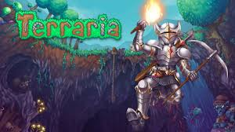

Descripcion
Es como Minecraft pero en 2D. Excavas, construyes, consigues materiales y luchas contra jefes cada vez mas dificiles. Tiene mas de 5000 objetos distintos y mas de 70 jefes. El juego tiene 14 anos y todavia sacan actualizaciones gratis. Puedes jugar con amigos y hay miles de horas de contenido.
Desarrollador
Re-Logic
Por que esta en el top 10?
Porque vendio mas de 50 millones de copias y cuesta muy poco. Es uno de los juegos con mejor relacion precio-contenido que existe.
Informacion rapida
Ano de lanzamiento: 2011
Genero: Sandbox / Aventura
Desarrollador: Re-Logic
← Shovel Knight